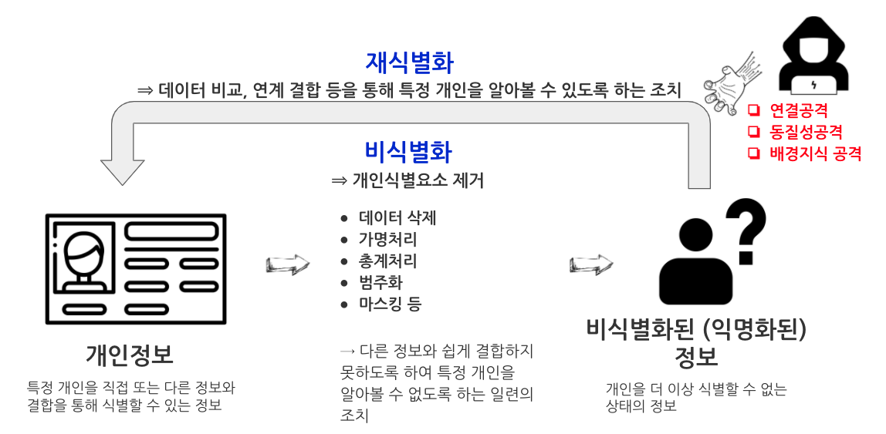
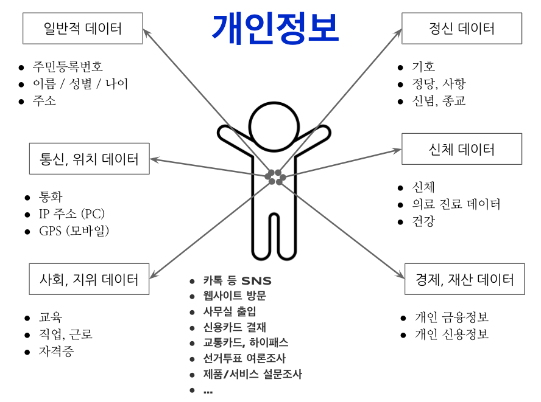
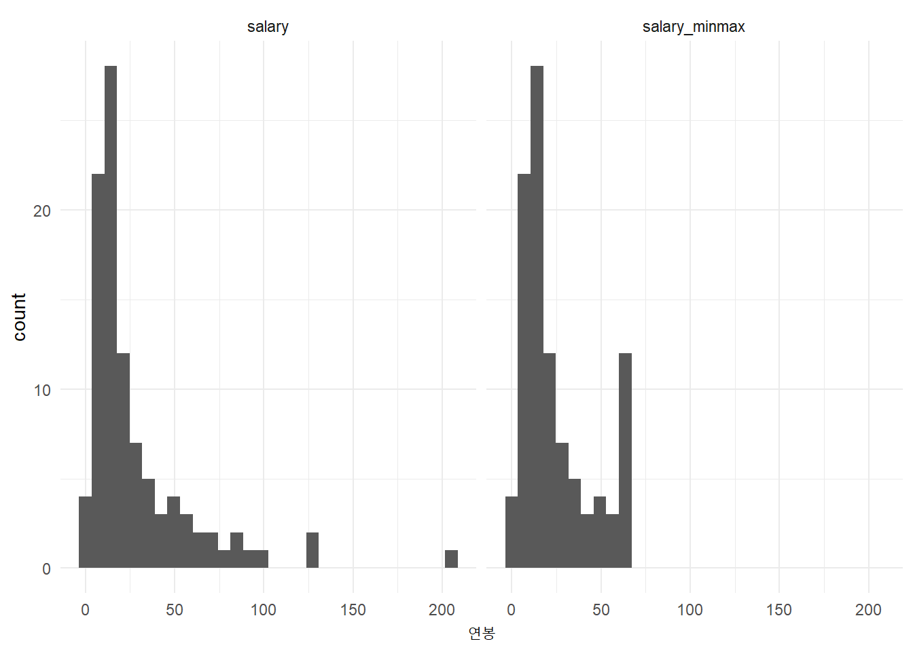

비식별화(de-identification)는 개인정보의 일부 또는 전부를 삭제하거나, 다른 정보로 대체함으로써 특정개인을 식별하기 어렵도록 만드는 것이다. 유사용어로 개인에 대한 재식별이 더 이상 불가능한 상태를 의미하는 익명화(Anonymization)가 있다. 개인을 식별하기 위해 비식별화된 데이터를 역으로 사용하는 과정은 데이터 재식별화(data re-identification), 혹은 비익명화(de-anonymization)는 익명 데이터(‘비식별화된 데이터’)를 데이터에 속한 개인을 식별하기 위해 이미 공개된 정보나 보조 데이터와 일치시키는 과정이다.
준식별자(quasi-identifiers)는 고유 식별자가 아닌 정보를 말하지만 고유 식별자를 만들기 위해 다른 준식별자들과 결합할 수 있는 엔티티와 충분히 상호 관련되어 있다. 그러므로 준식별자는 다른 정보와 결합 시 개인 식별 정보가 되고, 이러한 프로세스를 재식별(re-identification)이라고 부른다. 한 예로, Latanya Sweeney는 사회적 성, 생일, 우편번호 중 하나만 가지고서는 어느 것도 고유하게 개인을 식별하지 못하더라도 이 셋을 결합하면 미국 내 개인의 87%를 식별하기에 충분하다는 것을 증명하였다.
비식별화 기법은 가명처리, 총계처리, 값 삭제, 범주화, 마스킹의 5가지 방법이 있다.
| 처리기법 | 예시 | 세부 기법 |
|---|---|---|
| 가명처리 | 홍길동 35세 서울 거주 한국대 재학 –> 임꺽정 30대 서울 거주 국제대 재학 | 휴리스틱 가명화 암호화 교환방법 |
| 총계처리 | 임꺽쩡 180cm, 홍길동 170cm, 이콩쥐 160cm –> 물리학과 학생 평균: 170cm | 총계처리, 부분총계, 라운딩, 재배열 |
| 데이터 삭제 | 주민등록번호: 901206-1234567 —> 90년대 생, 남자:개인과 관련된 날짜정보(합격일 등)는 연단위 처리 | 식별자 삭제, 식별자 부분삭제, 레코드 삭제, 식별요소 전부삭제 |
| 데이터 범주화 | 홍길동, 35세 —> 홍씨, 30~40세 | 감추기, 랜덤 라운딩, 범위 방법, 제어 라운딩 |
| 데이터 마스킹 | 홍길동, 35세, 서울 거주, 한국대 재학 —> 홍**, 35세, 서울 거주, **대학 재학 | 임의 잡음 추가, 공백과 대체 |
개인이 만들어내는 데이터는 수도 없이 많으며 가장 일반적인 인구통계학적인 데이터부터, 스마트폰과 PC를 사용하면서 생산되는 지리위치 데이터, 사회경제적인 지표를 나타내는 데이터, 신념, 종교, 정당, 성향, 기호로 표상되는 정신관련 데이터, 키와 몸무게, 의료기관 방문기록, 코로나19 백신 접종여부와 건강관련 데이터, 개인 신용과 금융관련 데이터까지 정말 다양하다. 그외에도 카톡, 페이스북, 구글 검색, 웹사이트 방문기록, 회사를 다니게 되면 카드키로 기록되는 방문기록, 홈쇼핑, 편의점 신용카드 결재 데이터, 각종 여론조사 데이터, 제품과 서비스에 대한 만족도 데이터까지 실로 다양하다.

파이썬 faker 팩키지를 통해 생성한 데이터에 주민번호를 만들어내고 주민번호 전체를 마스킹하거나 출생연도와 성별만 주민번호를 통해 저장시키고 나머지 모든 주민번호 관련 숫자를 마스킹 처리한다.
library(tidyverse)
faked_tbl <- read_csv("data/faked.csv")
faked_tbl %>%
mutate(masked_ssn = str_replace_all(ssn, "[0-9]", "*")) %>%
mutate(masked_dob_ssn = glue::glue("{str_sub(ssn, 1,2)}****-{str_sub(ssn, 8,8)}******")) %>%
select(name, ssn, masked_ssn, masked_dob_ssn)# A tibble: 100 x 4
name ssn masked_ssn masked_dob_ssn
<chr> <chr> <chr> <glue>
1 이경자 510509-1814474 ******-******* 51****-1******
2 이은경 910719-1056112 ******-******* 91****-1******
3 김성진 750318-2013376 ******-******* 75****-2******
4 박승민 910028-1278202 ******-******* 91****-1******
5 박상철 390906-1877754 ******-******* 39****-1******
6 류지우 530709-2973749 ******-******* 53****-2******
7 문현숙 050626-1089690 ******-******* 05****-1******
8 최정숙 970718-1829726 ******-******* 97****-1******
9 이지우 180025-2247415 ******-******* 18****-2******
10 안상훈 740900-1475456 ******-******* 74****-1******
# … with 90 more rows이름을 앞서와 마찬가지로 마스킹해서 처리할 수도 있으나, 전혀 새로운 이름으로 치환해서 대체하는 것도 비식별화시키는 방법중의 하나가 된다. CSV 파일을 파이썬 판다스로 불러읽어들인 후에 faker를 사용해서 해당 이름에 다른 이름을 넣는 것이다.
import pandas as pd
from faker import Faker
fake_data = Faker('ko_KR')
faker_pd = pd.read_csv("data/faked.csv")
faker_pd["가명"] = faker_pd['name'].apply(lambda x: fake_data.name())
faker_pd[["name", "ssn", "가명"]] name ssn 가명
0 이경자 510509-1814474 김민준
1 이은경 910719-1056112 김혜진
2 김성진 750318-2013376 박정숙
3 박승민 910028-1278202 김예준
4 박상철 390906-1877754 정순자
.. ... ... ...
95 최명자 920515-1087235 최지우
96 우지연 390300-1639266 이서준
97 류숙자 390022-1544706 손준영
98 류정남 350521-2866730 유준혁
99 박상철 400325-1307515 윤지은
[100 rows x 3 columns]데이터를 익명화하기 위해 총계(aggregation) 혹은 범주화 기법을 사용해서 비식별화한다.
faked_tbl %>%
mutate(salary_agg = ifelse(salary >= quantile(salary, .7), "많음", "적음")) %>%
select(name, salary, salary_agg)# A tibble: 100 x 3
name salary salary_agg
<chr> <dbl> <chr>
1 이경자 1.09 적음
2 이은경 9.58 적음
3 김성진 22.7 적음
4 박승민 12.3 적음
5 박상철 90.5 많음
6 류지우 24.4 적음
7 문현숙 9.12 적음
8 최정숙 12.9 적음
9 이지우 4.72 적음
10 안상훈 29.9 많음
# … with 90 more rows최대 혹은 최소값을 갖는 경우 누구인지 확연히 알 수 있기 때문에 상위 \(x\)%에 포함되는 값을 특정 값을 대체하여 개인을 식별할 수 없도록 조치를 취한다. 상위 90% 이상 되는 연봉은 90분위 연봉으로 치환을 했기 때문에 고연봉을 받는 사람을 비식별화시킬 수 있다.
faked_tbl %>%
mutate(salary_minmax = ifelse(salary >= quantile(salary, .9), quantile(salary, .9), salary)) %>%
select(name, salary, salary_minmax) %>%
pivot_longer(salary:salary_minmax, names_to = "구분", values_to = "연봉") %>%
ggplot(aes(x=연봉)) +
geom_histogram() +
facet_wrap(~구분) +
theme_minimal(base_family = "NanumGothic")
K-익명성 (K-anonymity)
차등 프라이버시(Differential Privacy, DP)
데이터 과학자 이광춘 저작
kwangchun.lee.7@gmail.com